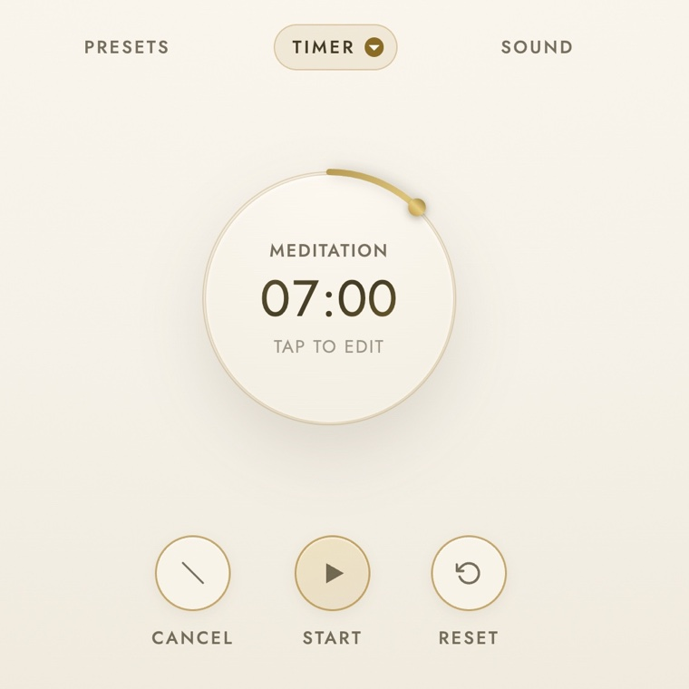

Meditation Timer
A calm space to just be present
Wind the dial to any length and drift with soft, synthesized Tibetan-bowl chimes. Perfect for meditation, breathwork, or a mindful pause to reset your focus.
- Set any duration by dragging the dial, or type an exact time
- Optional interval bells to gently mark the halfway point
- Seven warm bell tones to choose from
- Save reusable presets for your favorite sessions